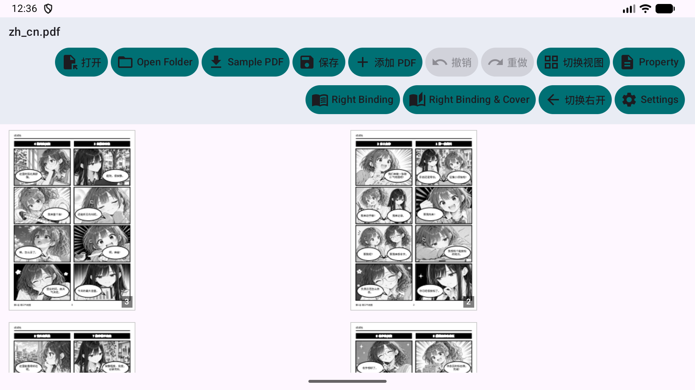
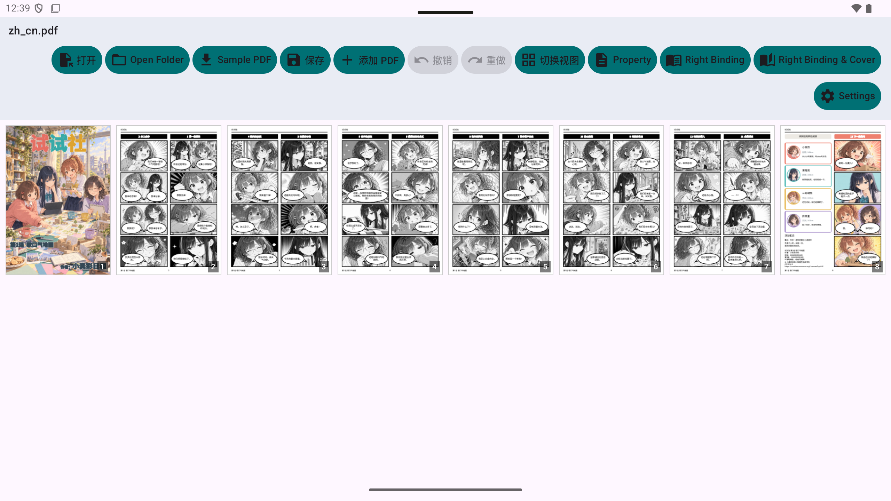
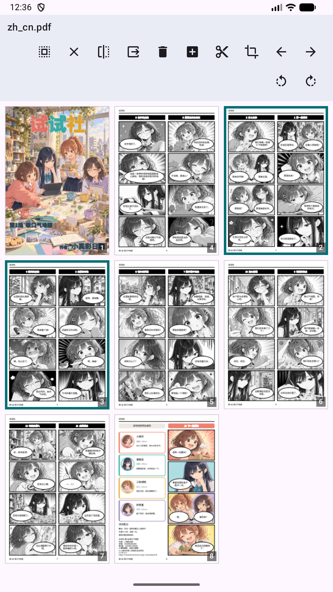
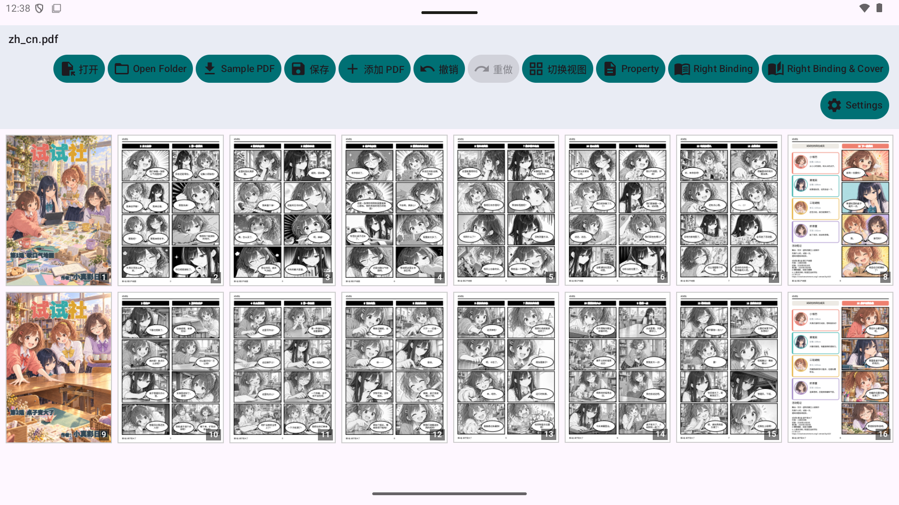
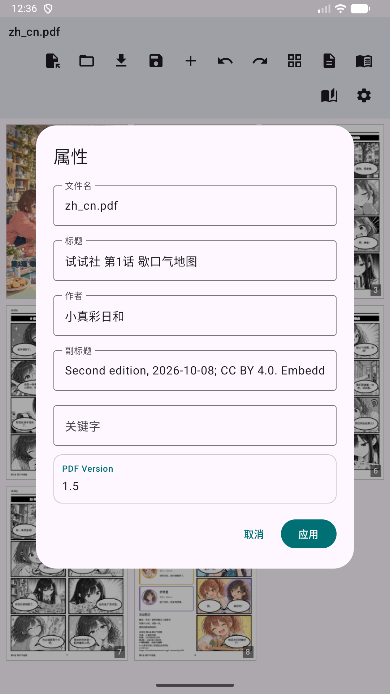
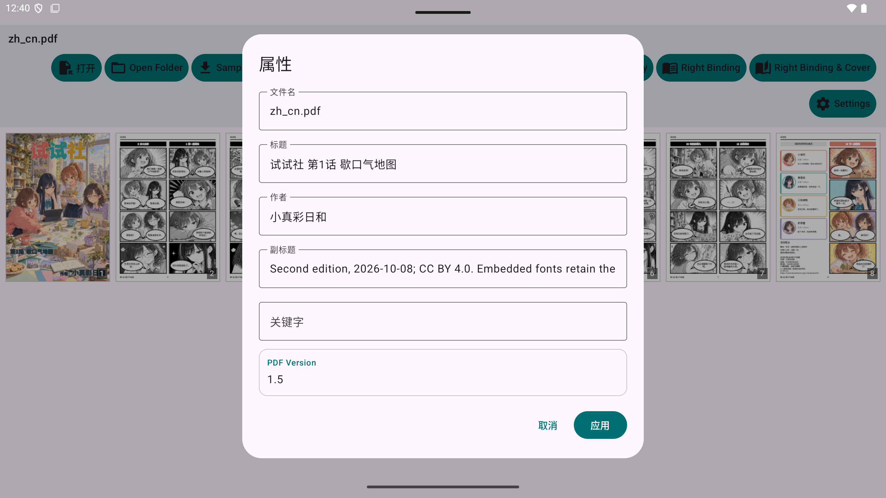
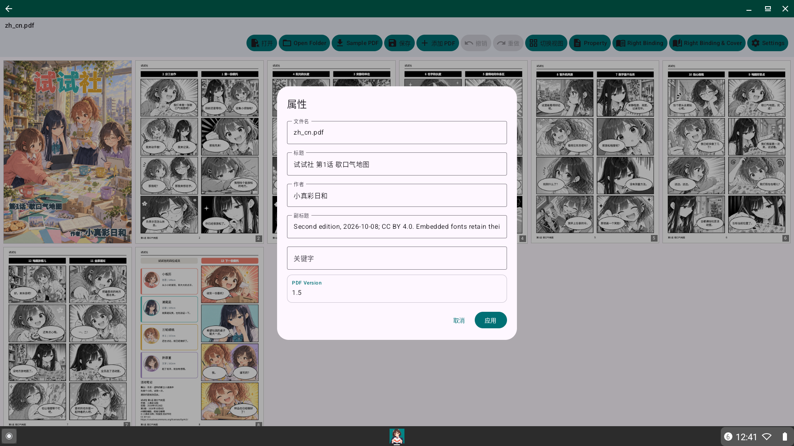

PDF 跨页分割与合并工具
自由实现跨页显示、双页视图、智能拆分与合并。100%离线安全处理，专为Android设计的直观PDF编辑工具。
自由实现跨页显示、双页视图、智能拆分与合并。100%离线安全处理，专为Android设计的直观PDF编辑工具。
见开PDF实用工具是一款专为读者和创作者设计的全功能工具。无论是整理扫描书籍、合并文档还是重新排序页面，直观的操作让您轻松实现所需编辑。
并排显示两页。完美支持日式书籍和漫画的“从右向左阅读（RTL）”。

将双页跨页拆分为单页。支持垂直（左右）和水平（上下）拆分方向。

仅需拖动缩略图即可整理页面顺序。

轻松将多个PDF文件合并为一个，或向现有PDF添加页面。

在智能手机、平板电脑和Chromebook等各种Android环境中流畅运行。



下载示例 PDF 漫画以测试应用：
共51份PDF，涵盖14种语言、17种语言及地区版本，每种3话。西班牙/拉丁美洲、巴西/葡萄牙、台湾/香港分别筛选。香港版采用标准书面中文，并非口语粤语版。下载时验证大小和SHA-256，并保留旧PDF。
《试试社》第1话・第2话
© 2026 小真彩日和
本作品中，发布者拥有版权或其他许可权利的部分采用知识共享 署名 4.0 国际（CC BY 4.0）许可协议提供。
再利用时，请标明作品名称、作者名“小真彩日和”、原作品发布源及许可协议链接，并说明是否进行了修改。
本作品在文本、图像创作以及翻译过程中使用了生成式AI。对于字体等由第三方拥有权利的素材，适用其各自的许可协议。本声明不限制对不受版权等保护的部分的使用。
视频为英语，将在YouTube中打开。